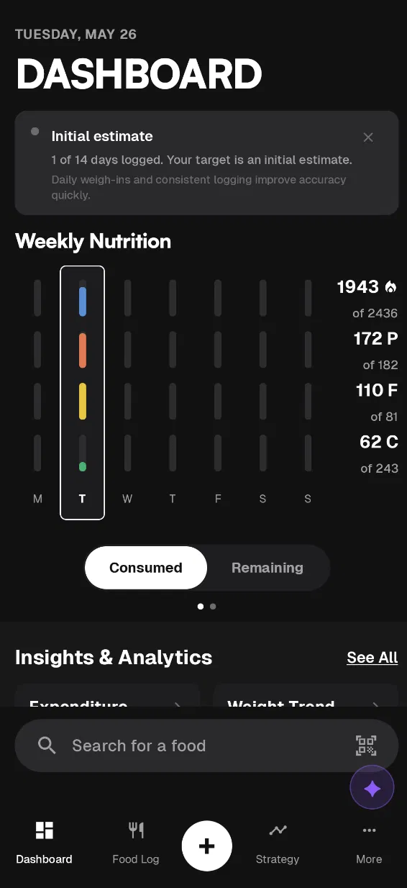
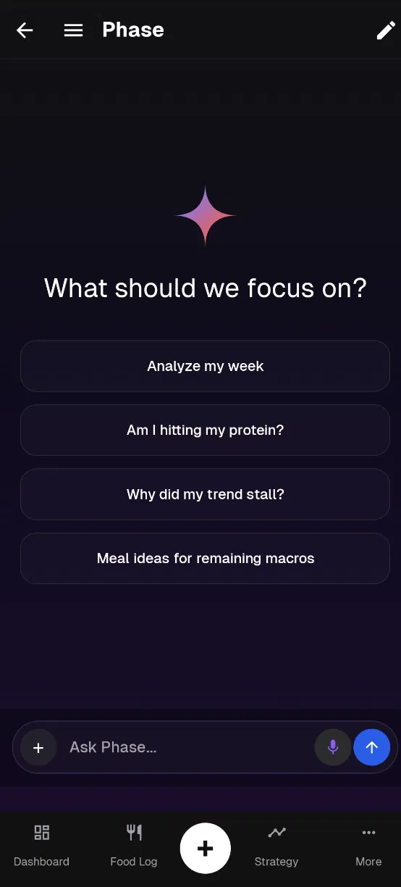

No subscriptions. No paywalled barcode scanners. Experience a fully local-first nutrition tracker with an adaptive metabolism engine and a personal AI coach. Take control of your data.


Forget scanning menus and choosing from 15 identical entries. Just talk or type to the AI. Tell it what you ate, ask about your nutritional gaps, or identify why your scale weight is stalling.
MacroPhase is built for trackers who want elite nutrition features without the corporate baggage.
Get fully adaptive metabolic rate tracking and TDEE math calculation, calculated continuously from your own logs—without paying €12/month just to log protein.
Say goodbye to complex database grids. Type "I had a protein shake and a large egg" and let the coach verify, calculate, and write entries straight to your database.
Tracking 20+ vitamins is useless without guidance. The coach monitors your averages and gives actionable suggestions based on what you actually eat.
Most apps estimate your calorie target once using a static textbook formula. MacroPhase calculates your active expenditure dynamically.
By analyzing your daily calorie intake against your scale weight trend, the engine automatically detects changes in your metabolic rate. If your expenditure drops or climbs, your targets adapt automatically.
Water weight bounces up and down. Traditional trackers leave you guessing why progress stalled. MacroPhase calculates the truth.
MacroPhase logs over 20+ vitamins and minerals automatically from your food log database.
Instead of staring at red progress bars, you get actionable recommendations from the AI Coach explaining exactly what foods you typically enjoy that will fill your specific nutritional gaps.
Unlike other trackers that force you into a single messy database, MacroPhase lets you control exactly where your food data comes from. Toggle national database modules for offline logging.
Switching apps shouldn't mean losing years of your data. MacroPhase makes migrating your weight logs and favorite custom foods frictionless.
MacroFactor Importer: Load your official MacroFactor export (.xlsx) directly during onboarding or in settings. The app instantly reconstructs your entire historical weight and calorie intake logs.
MacroPhase Backups: Own your databases. Export your full SQLite logging database at any time and import it to restore your state in a single click.
AI-Powered Reconstruction: Upload custom spreadsheets, CSV files, or even multiple screenshots of your old custom foods list into the AI Coach. The coach parses the files and bulk-recreates your favorites, logs your weight history, and populates your habit memory.
Connect your smartwatch or wearable sensor directly via Health Connect. MacroPhase reads steps, sleep cycles, heart rate variability, and historical weight logs.
This telemetry gives the AI coach context: it knows if a weight spike is likely due to sleep deprivation, or if your calorie budget should adjust because your daily step counts dropped.
MacroPhase uses the Bring Your Own Key (BYOK) model. Plug in your own Gemini API key (which has a generous free tier) for unlimited, advanced AI coaching.
Because we don't pay inference bills, we don't charge you a subscription. If you don't want to use an API key, advanced users can download and run on-device AI models completely locally.
No accounts, no email lists, and no telemetry tracking. Your weight trends, food logs, and synced Health Connect data reside strictly in your phone's local database.
The nerdy details of the app for advanced users.
The AI Coach uses a 15-iteration loop with 22 developer-defined tools. When you send a prompt, the model selects and chains tools to write or read database records, query nutritional information, or search your favorite dishes. It executes dual models: either cloud Gemini via your API key or an on-device fallback (Gemma 4 LiteRTLM E4B/E2B) running entirely offline.
Everything resides locally in an SQLite database managed via Room. MacroPhase does not run cloud sync servers. Food searches utilize a cached database of common items and products, while custom foods are saved to your local database. Backup and restore are handled natively through Android's system backup.
The math engine utilizes an Exponentially Weighted Moving Average (EWMA) to smooth out daily water weight fluctuations, employing an alpha of 0.1 (~19-day half-life). TDEE calculation uses a 14-day rolling window requiring a minimum of 5 logged days, applying a non-linear tissue density table alongside an adaptive Mifflin-St Jeor baseline calculation.